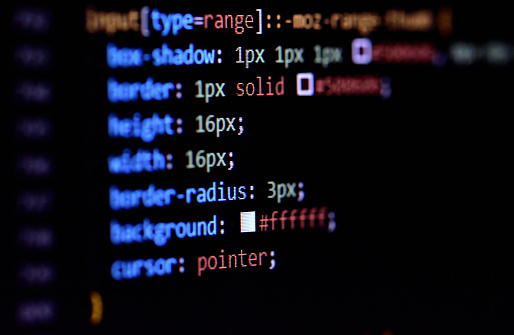

HOJAS DE ESTILO EN CASCADA CSS
Según Durango, A. (2015). Diseño Web con CSS: 2ª Edición. IT Campus Academy. Los estilos CSS nos dan mucha libertad a la hora de definir los estilos. En el mismo documento se puede utilizar uno o mas archivos externos, definir los estilos en la sección head del documento o utilizar el atributo de estilos de los elementos HTML. REFERENCIAS Durango, A. (2015). Diseño Web con CSS: 2ª Edición. IT Campus Academy. 